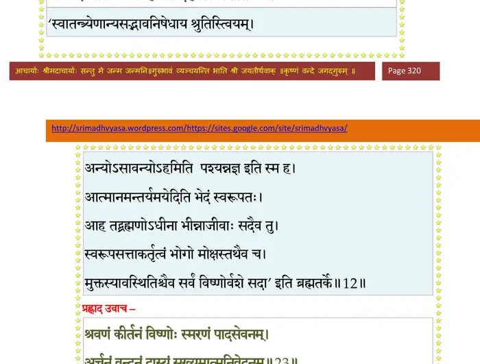
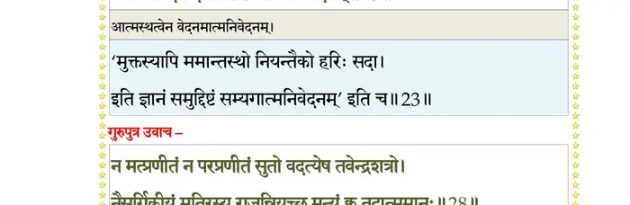
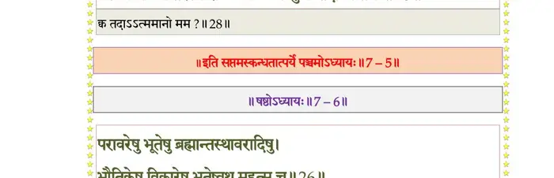

स्कन्ध 7 · अध्याय 5
श्लोक १
नारद उवाच–
पौरोहित्याय भगवान् वृतः काव्यः किलासुरैः ।
शण्डामर्कौ सुतौ तस्य दैत्यराजगृहान्तिके।। १ ।।
पौरोहित्याय भगवान् वृतः काव्यः किलासुरैः ।
शण्डामर्कौ सुतौ तस्य दैत्यराजगृहान्तिके।। १ ।।
श्लोक २
तौ राज्ञा प्रापितं बालं प्रह्लादं नयकोविदम् ।
पाठयामासतुः पाठ्यानन्यांश्चासुरबालकान्।। २ ।।
पाठयामासतुः पाठ्यानन्यांश्चासुरबालकान्।। २ ।।
श्लोक ३
यत् तत्र गुरुणा प्रोक्तं शुश्रुवे न पपाठ ह ।
न साधु मनसा मेने स्वरूपासद्ग्रहाश्रयम्।। ३ ।।
न साधु मनसा मेने स्वरूपासद्ग्रहाश्रयम्।। ३ ।।
श्लोक ४
एकदाऽसुरराट् पुत्रमङ्कमारोप्य पाण्डव ।
पप्रच्छ कथ्यतां वत्स मन्यते साधु यद् भवान्।। ४ ।।
पप्रच्छ कथ्यतां वत्स मन्यते साधु यद् भवान्।। ४ ।।
श्लोक ५
प्रह्लाद उवाच–
तत् साधु मन्येऽसुरवर्य देहिनां सदा समुद्विग्नधियामसद्ग्रहात् ।
हित्वाऽऽत्मपातं गृहमन्धकूपं वनं गतो यद्धरिमाश्रयेत।। ५ ।।
तत् साधु मन्येऽसुरवर्य देहिनां सदा समुद्विग्नधियामसद्ग्रहात् ।
हित्वाऽऽत्मपातं गृहमन्धकूपं वनं गतो यद्धरिमाश्रयेत।। ५ ।।
श्लोक ६
नारद उवाच–
श्रुत्वा पुत्रगिरो दैत्यः परपक्षसमीहिताः ।
जहास बुद्धिर्बालानां भिद्यते परबुद्धिभिः।। ६ ।।
श्रुत्वा पुत्रगिरो दैत्यः परपक्षसमीहिताः ।
जहास बुद्धिर्बालानां भिद्यते परबुद्धिभिः।। ६ ।।
श्लोक ७
सम्यग् विधार्यतां बालो गुरुगेहे द्विजातिभिः ।
विष्णुपक्षप्रतिच्छन्नैर्न भिद्येतास्य धीर्यथा।। ७ ।।
विष्णुपक्षप्रतिच्छन्नैर्न भिद्येतास्य धीर्यथा।। ७ ।।
श्लोक ८
गृहमानीतमाहूय प्रह्लादं दैत्ययाजकाः ।
प्रशस्य श्लक्ष्णया वाचा समपृच्छन्त सामभिः।। ८ ।।
प्रशस्य श्लक्ष्णया वाचा समपृच्छन्त सामभिः।। ८ ।।
श्लोक ९
वत्स प्रह्लाद भद्रं ते सत्यं कथय मा मृषा ।
बालानति कुतस्तुभ्यमेष बुद्धिविपर्ययः।। ९ ।।
बालानति कुतस्तुभ्यमेष बुद्धिविपर्ययः।। ९ ।।
श्लोक १०
बुद्धिभेदः परकृत उताहो ते स्वतो भवेत् ।
भण्यतां श्रोतुकामानां गुरूणां कुलनन्दन।। १० ।।
भण्यतां श्रोतुकामानां गुरूणां कुलनन्दन।। १० ।।
श्लोक ११
प्रह्लाद उवाच–
परः स्वश्चेत्यसद्ग्राहः पुंसां यन्मायया कृतः ।
विमोहितधियां दृष्टः तस्मै भगवते नमः।। ११ ।।
परः स्वश्चेत्यसद्ग्राहः पुंसां यन्मायया कृतः ।
विमोहितधियां दृष्टः तस्मै भगवते नमः।। ११ ।।
श्लोक १२
स यदाऽनुगतः पुंसां पशुबुद्धिर्विभिद्यते ।
अन्य एष तथाऽन्योऽहमिति देहगताऽसती।। १२ ।।
अन्य एष तथाऽन्योऽहमिति देहगताऽसती।। १२ ।।
भागवततात्पर्यनिर्णय

श्लोक १३
स एष आत्मा स्वपरेत्यबुद्धिभिर्दुरन्वयानुक्रमणो निरुच्यते ।
मुह्यन्ति यद्वर्त्मनि वेदवादिनो ब्रह्मादयो ह्येष भिनत्ति मे मतिम्।। १३ ।।
मुह्यन्ति यद्वर्त्मनि वेदवादिनो ब्रह्मादयो ह्येष भिनत्ति मे मतिम्।। १३ ।।
श्लोक १४
यथा भ्राम्यत्ययो ब्रह्मन् स्वयमाकर्षसन्निधौ ।
तथा मे भिद्यते चेतश्चक्रपाणौ यदृच्छया।। १४ ।।
तथा मे भिद्यते चेतश्चक्रपाणौ यदृच्छया।। १४ ।।
श्लोक १५
नारद उवाच–
एतावद् ब्राह्मणायोक्त्वा विरराम महामतिः ।
तं निर्भर्त्स्याथ कुपितः सुदीनो राजसेवकः।। १५ ।।
एतावद् ब्राह्मणायोक्त्वा विरराम महामतिः ।
तं निर्भर्त्स्याथ कुपितः सुदीनो राजसेवकः।। १५ ।।
श्लोक १६
आनीयतामरे वेत्रमस्माकमयशस्कृतः ।
कुलाङ्गारस्य दुर्बुद्धेश्चतुर्थोऽस्योदितो दमः।। १६ ।।
कुलाङ्गारस्य दुर्बुद्धेश्चतुर्थोऽस्योदितो दमः।। १६ ।।
श्लोक १७
दैतेयचन्दनवने जातोऽयं कण्टकद्रुमः ।
तन्मूलोन्मूलपरशोर्विष्णोर्नालायितोऽर्भकः।। १७ ।।
तन्मूलोन्मूलपरशोर्विष्णोर्नालायितोऽर्भकः।। १७ ।।
श्लोक १८
इति तं विविधोपायैर्भीषयन् तर्जनादिभिः ।
प्रह्लादं ग्राहयामास त्रिवर्गस्योपपादनम्।। १८ ।।
प्रह्लादं ग्राहयामास त्रिवर्गस्योपपादनम्।। १८ ।।
श्लोक १९
तत एनं गुरुर्ज्ञात्वा ज्ञातज्ञेयचतुष्टयम् ।
दैत्येन्द्रं दर्शयामास मातृमृष्टमलङ्कृतम्।। १९ ।।
दैत्येन्द्रं दर्शयामास मातृमृष्टमलङ्कृतम्।। १९ ।।
श्लोक २०
पादयोः पतितं बालं प्रतिनन्द्याशिषाऽसुरः ।
परिष्वज्य चिरं दोर्भ्यां परमामाप निर्वृतिम्।। २० ।।
परिष्वज्य चिरं दोर्भ्यां परमामाप निर्वृतिम्।। २० ।।
श्लोक २१
आरोप्याङ्कमवघ्राय मूर्धन्यश्रुकलाम्बुभिः ।
आसिञ्चन् विकसद्वक्त्रमिदमाह युधिष्ठिर।। २१ ।।
आसिञ्चन् विकसद्वक्त्रमिदमाह युधिष्ठिर।। २१ ।।
श्लोक २२
प्रह्लादानूद्यतां तात स्वधीतं किञ्चिदुत्तमम् ।
कालेनैतावताऽऽयुष्मन् यदशिक्षद् गुरोर्भवान्।। २२ ।।
कालेनैतावताऽऽयुष्मन् यदशिक्षद् गुरोर्भवान्।। २२ ।।
श्लोक २३
प्रह्लाद उवाच–
श्रवणं कीर्तनं विष्णोः स्मरणं पादसेवनम् ।
अर्चनं वन्दनं दास्यं सख्यमात्मनिवेदनम्।। २३ ।।
श्रवणं कीर्तनं विष्णोः स्मरणं पादसेवनम् ।
अर्चनं वन्दनं दास्यं सख्यमात्मनिवेदनम्।। २३ ।।
भागवततात्पर्यनिर्णय

श्लोक २४
इति पुंसाऽर्पिता विष्णौ भक्तिश्चेन्नवलक्षणा ।
क्रियते भगवत्यद्धा तन्मन्येऽधीतमुत्तमम्।। २४ ।।
क्रियते भगवत्यद्धा तन्मन्येऽधीतमुत्तमम्।। २४ ।।
श्लोक २५
नारद उवाच–
निशम्यैतत् सुतवचो हिरण्यकशिपुस्तदा ।
गुरुपुत्रमुवाचेदं रुषा प्रस्फुरिताधरः।। २५ ।।
निशम्यैतत् सुतवचो हिरण्यकशिपुस्तदा ।
गुरुपुत्रमुवाचेदं रुषा प्रस्फुरिताधरः।। २५ ।।
श्लोक २६
हिरण्यकशिपुरुवाच–
ब्रह्मबन्धो किमेतत् ते विपक्षं श्रयताऽसता ।
असारं ग्राहितो बालो मामनादृत्य दुर्मते।। २६ ।।
ब्रह्मबन्धो किमेतत् ते विपक्षं श्रयताऽसता ।
असारं ग्राहितो बालो मामनादृत्य दुर्मते।। २६ ।।
श्लोक २७
सन्ति ह्यसाधवो लोके दुर्मैत्राश्छद्मवेषिणः ।
तेषामुदेत्यघं काले रोगः पातकिनामिव।। २७ ।।
तेषामुदेत्यघं काले रोगः पातकिनामिव।। २७ ।।
श्लोक २९
गुरुपुत्र उवाच–
न मत्प्रणीतं न परप्रणीतं सुतो वदत्येष तवेन्द्रशत्रो ।
नैसर्गिकीयं मतिरस्य राजन् नियच्छ मन्युं क्व तदात्ममानः ।। २८
नारद उवाच–
गुरुणैवं प्रतिप्रोक्तो भूय आहासुरः सुतम् ।
न चेद्गुरुमुखीयं ते कुतोऽभद्रासती मतिः।। २९ ।।
न मत्प्रणीतं न परप्रणीतं सुतो वदत्येष तवेन्द्रशत्रो ।
नैसर्गिकीयं मतिरस्य राजन् नियच्छ मन्युं क्व तदात्ममानः ।। २८
नारद उवाच–
गुरुणैवं प्रतिप्रोक्तो भूय आहासुरः सुतम् ।
न चेद्गुरुमुखीयं ते कुतोऽभद्रासती मतिः।। २९ ।।
भागवततात्पर्यनिर्णय

श्लोक ३०
प्रह्लाद उवाच–
मतिर्न कृष्णे परतः स्वतोऽपि वा मिथोऽभिपद्येत गृहव्रतानाम् ।
अदान्तगोभिर्विशतां तमिस्रं पुनः पुनश्चर्वितचर्वणानाम्।। ३० ।।
मतिर्न कृष्णे परतः स्वतोऽपि वा मिथोऽभिपद्येत गृहव्रतानाम् ।
अदान्तगोभिर्विशतां तमिस्रं पुनः पुनश्चर्वितचर्वणानाम्।। ३० ।।
श्लोक ३१
न ते विदुः स्वार्थगतिं हि विष्णुं दुराशया ये बहिरर्थभावाः ।
अन्धा यथान्धैरुपनीयमाना वाचीशतन्त्यामुरुदामि्न बद्धाः ।। ३१ ।।
अन्धा यथान्धैरुपनीयमाना वाचीशतन्त्यामुरुदामि्न बद्धाः ।। ३१ ।।
श्लोक ३२
नैषां मतिस्तावदुरुक्रमाङ्घ्रिं स्पृशत्यनर्थापगमो यदर्थः ।
महीयसां पादरजोऽभिषेकं निष्किञ्चनानां न वृणीत यावत् ।। ३२ ।।
महीयसां पादरजोऽभिषेकं निष्किञ्चनानां न वृणीत यावत् ।। ३२ ।।
श्लोक ३३
नारद उवाच–
इत्युक्त्वोपरतं पुत्रं हिरण्यकशिपू रुषा ।
अन्धीकृतात्मा स्वोत्सङ्गान्निरस्यत महीतले ।
आहामर्षरुषाऽऽविष्टः कषायीकृतलोचनः।। ३३ ।।
इत्युक्त्वोपरतं पुत्रं हिरण्यकशिपू रुषा ।
अन्धीकृतात्मा स्वोत्सङ्गान्निरस्यत महीतले ।
आहामर्षरुषाऽऽविष्टः कषायीकृतलोचनः।। ३३ ।।
श्लोक ३४
हिरण्यकशिपुरुवाच –
वध्यतामाश्वयं वध्यो निस्सारयत नैर्ऋताः ।
अयं मे भ्रातृहा शोच्यो हित्वा स्वान् सुहृदोऽधमः।। ३४।।
वध्यतामाश्वयं वध्यो निस्सारयत नैर्ऋताः ।
अयं मे भ्रातृहा शोच्यो हित्वा स्वान् सुहृदोऽधमः।। ३४।।
श्लोक ३४
पितृव्यहन्तुः पादौ यो विष्णोर्दासवदर्चति ।
विष्णोर्वा साध्वसौ किं नु करिष्यत्यसमञ्जसः ।। ३४ ।।
विष्णोर्वा साध्वसौ किं नु करिष्यत्यसमञ्जसः ।। ३४ ।।
श्लोक ३५
सौहृदं दुस्त्यजं पित्रोरत्यजत् पञ्चहायनः।। ३५ ।।
श्लोक ३६
परोऽप्यपत्यं हितकृद् यथौषधं स्वदेहजोऽप्यामयवत् सुतोऽहितः ।
छिन्द्यात् तदङ्गं यदुतात्मनोऽहितं शेषं सुखं जीवति यद्विसर्जनात्।। ३६ ।।
छिन्द्यात् तदङ्गं यदुतात्मनोऽहितं शेषं सुखं जीवति यद्विसर्जनात्।। ३६ ।।
श्लोक ३७
सर्वैरुपायैर्हन्तव्यः सम्भोगशयनासनैः ।
सुहृल्लिङ्गधरः शत्रुर्मुनेर्दुष्टमिवेन्द्रियम्।। ३७ ।।
सुहृल्लिङ्गधरः शत्रुर्मुनेर्दुष्टमिवेन्द्रियम्।। ३७ ।।
श्लोक ३८
नैर्ऋतास्ते समुद्दिष्टा भर्त्रा वै शूलपाणयः ।
तिग्मदंष्ट्राः करालास्याः ताम्रश्मश्रुशिरोरुहाः।। ३८ ।।
तिग्मदंष्ट्राः करालास्याः ताम्रश्मश्रुशिरोरुहाः।। ३८ ।।
श्लोक ३९
नदन्तो भैरवं नादं छिन्धि भिन्धीति वादिनः ।
आसीनं चाहनन् शूलैः प्रह्लादं सर्वमर्मसु।। ३९ ।।
आसीनं चाहनन् शूलैः प्रह्लादं सर्वमर्मसु।। ३९ ।।
श्लोक ४०
परे ब्रह्मण्यनिर्देश्ये भगवत्यखिलात्मनि ।
युक्तात्मन्यफला आसन्नपुण्यस्येव तत्क्रियाः।। ४० ।।
युक्तात्मन्यफला आसन्नपुण्यस्येव तत्क्रियाः।। ४० ।।
श्लोक ४१
प्रयासेऽपिहते तस्मिन् दैत्येन्द्रः परिशङ्कितः ।
चकार तद्वधोपायान् निर्बन्धेन युधिष्ठिर।। ४१ ।।
चकार तद्वधोपायान् निर्बन्धेन युधिष्ठिर।। ४१ ।।
श्लोक ४२
दिग्गजैर्दन्दशूकेन्द्रैरभिचारावपातनैः ।
मायाभिः सन्निरोधैश्च गरदानैरभोजनैः।। ४२ ।।
मायाभिः सन्निरोधैश्च गरदानैरभोजनैः।। ४२ ।।
श्लोक ४३
हिमवाय्वग्निसलिलैः पर्वताक्रमणैरपि ।
न शशाक यदा हन्तुमपापमसुरः सुतम्।। ४३ ।।
न शशाक यदा हन्तुमपापमसुरः सुतम्।। ४३ ।।
श्लोक ४४
चिन्तां दीर्घतमां प्राप्तस्तत्कर्तुं नाभ्यपद्यत ।
एष मे बह्वसाधूक्तो वधोपायाश्च निर्मिताः।। ४४ ।।
एष मे बह्वसाधूक्तो वधोपायाश्च निर्मिताः।। ४४ ।।
श्लोक ४५
तैस्तैर्द्रोहैरसद्धर्मैर्मुक्तः स्वेनैव तेजसा ।
वर्तमानोऽविदूरे वै बालोऽप्यजडधीरयम्।। ४५ ।।
वर्तमानोऽविदूरे वै बालोऽप्यजडधीरयम्।। ४५ ।।
श्लोक ४६
न विस्मरति मेऽनार्यं शुनःशेप इव प्रभुः ।
अप्रमेयानुभावोऽयमकुतश्चिद्भयोऽमरः।। ४६ ।।
अप्रमेयानुभावोऽयमकुतश्चिद्भयोऽमरः।। ४६ ।।
श्लोक ४७
नूनमेतद्विरोधेन मृत्युर्मे भविता न वा ।
इति तच्चिन्तया किञ्चिन्म्लानश्रियमधोमुखम् ।
शण्डामर्कावौशनसौ विविक्त इति होचतुः।। ४७ ।।
इति तच्चिन्तया किञ्चिन्म्लानश्रियमधोमुखम् ।
शण्डामर्कावौशनसौ विविक्त इति होचतुः।। ४७ ।।
श्लोक ४८
जितं त्वयैकेन जगत्त्रयं भ्रुवोर्विजृम्भणत्रस्तसमस्तधिष्ण्यपम् ।
न तस्य चिन्त्यं तव नाथ चक्ष्महे न वै शिशूनां गुणदोषयोः पदम् ।। ४८ ।।
न तस्य चिन्त्यं तव नाथ चक्ष्महे न वै शिशूनां गुणदोषयोः पदम् ।। ४८ ।।
श्लोक ४९
इमं तु पाशैर्वरुणस्य बद्ध्वा निधेहि भीतो न पलायते यथा ।
बुद्धिश्च पुंसो वयसाऽऽर्यसेवया यावद्गुरुर्भार्गव आगमिष्यति।। ४९ ।।
बुद्धिश्च पुंसो वयसाऽऽर्यसेवया यावद्गुरुर्भार्गव आगमिष्यति।। ४९ ।।
श्लोक ५०
तथेति गुरुपुत्रोक्तमनुज्ञायेदमब्रवीत् ।
धर्मा ह्यस्योपदेष्टव्या राज्ञां ये गृहमेधिनाम्।। ५० ।।
धर्मा ह्यस्योपदेष्टव्या राज्ञां ये गृहमेधिनाम्।। ५० ।।
श्लोक ५१
धर्ममर्थं च कामं च नितरां चानुपूर्वशः ।
प्रह्लादायोचतू राजन् प्रश्रितावनताय च।। ५१ ।।
प्रह्लादायोचतू राजन् प्रश्रितावनताय च।। ५१ ।।
श्लोक ५२
यथा त्रिवर्गं गुरुभिरात्मने उपशिक्षितम् ।
न साधु मेने तच्छिक्षां द्वन्द्वारामोपवर्णिताम्।। ५२ ।।
न साधु मेने तच्छिक्षां द्वन्द्वारामोपवर्णिताम्।। ५२ ।।
श्लोक ५३
यदाऽऽचार्यः परावृत्तौ गृहमेधीयकर्मसु ।
वयस्यैर्बालकैस्तत्र सोपहूतः कृतक्षणैः।। ५३ ।।
वयस्यैर्बालकैस्तत्र सोपहूतः कृतक्षणैः।। ५३ ।।
श्लोक ५४
अथ तान् श्लक्ष्णया वाचा प्रत्याहूय महाबुधः ।
उवाच विद्वान् तन्निष्ठां कृपया प्रहसन्निव।। ५४ ।।
उवाच विद्वान् तन्निष्ठां कृपया प्रहसन्निव।। ५४ ।।
श्लोक ५५
ते तु तद्गौरवाः सर्वे त्यक्तक्रीडापरिच्छदाः ।
बाला नदूषितधियो द्वन्द्वारामेरितेहितैः।। ५५ ।।
बाला नदूषितधियो द्वन्द्वारामेरितेहितैः।। ५५ ।।
श्लोक ५६
पर्युपासत राजेन्द्र तन्न्यस्तहृदयेक्षणाः ।
तानाह करुणो मैत्रो महाभागवतोऽसुरः।। ५६ ।।
तानाह करुणो मैत्रो महाभागवतोऽसुरः।। ५६ ।।
।। इति श्रीमद्भागवते सप्तमस्कन्धे पञ्चमोऽध्यायः ।।